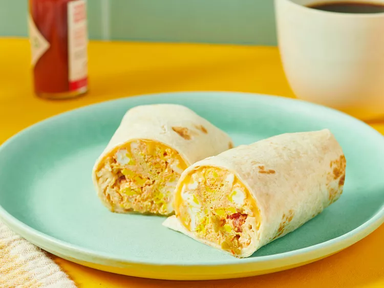

Home
Breakfast Burrito Recipe

Description:
A fast DIY breakfast for the road that's made in minutes with scrambled egg, salsa, and cheese wrapped up in a tortilla.
Ingredients:
(1 Serving)
- Eggs: 2 large
- Salsa: 2 tablespoons
- American Cheese (reduced-fat): 1 slice
- Tortilla: 1 tortilla
Steps:
- Gather the ingredients.
- Spray a cereal bowl with nonstick cooking spray. Crack the eggs into the bowl, add the salsa, and stir.
- Microwave on high for 1 minute, stir, and cook for another minute or until the mixture firms up.
- Place cheese in center of tortilla and top with egg mixture.
- Wrap it all up like a burrito.
- ENJOY!